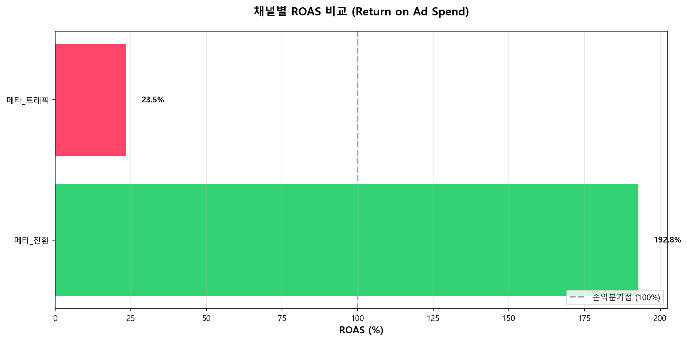

시계열 데이터 분석
AI 기반 예측 모델을 통한 광고 성과 예측 및 인사이트
🚨 주요 경고
💡 투자 추천
데이터를 불러오는 중...
성과 분석 대시보드
성과 예측 추이
데이터 분석 알고리즘
📖 비즈니스 인사이트란?
실제 마케팅 데이터를 바탕으로 즉시 실행 가능한 의사결정을 도와드립니다.
각 채널의 수익성, 제품별 매출 기여도, 예산 집행 현황을 한눈에 파악하세요.
💡 어떻게 활용하나요?
• 채널 ROAS: 100% 이상인 채널에 투자 확대, 이하인 채널은 개선 또는 축소
• 제품 매출: 주력 제품 집중 마케팅, 저성과 제품 전략 재검토
• 예산 소진율: 100% 초과 시 긴급 예산 조정 필요, 미달 시 집행 가속화 검토
실제 마케팅 데이터를 바탕으로 즉시 실행 가능한 의사결정을 도와드립니다.
각 채널의 수익성, 제품별 매출 기여도, 예산 집행 현황을 한눈에 파악하세요.
💡 어떻게 활용하나요?
• 채널 ROAS: 100% 이상인 채널에 투자 확대, 이하인 채널은 개선 또는 축소
• 제품 매출: 주력 제품 집중 마케팅, 저성과 제품 전략 재검토
• 예산 소진율: 100% 초과 시 긴급 예산 조정 필요, 미달 시 집행 가속화 검토
📊 채널별 ROAS 비교

💡 핵심 인사이트
✅ 고성과 채널
ROAS 150% 이상인 채널에 예산 추가 배정을 권장합니다.
투자 대비 높은 수익을 창출하고 있습니다.
⚠️ 개선 필요 채널
ROAS 100% 미만인 채널은 타겟팅 및 소재 최적화가 필요합니다.
손실이 발생하고 있는 상태입니다.
📈 액션 아이템
고성과 채널의 성공 요인을 분석하여
저성과 채널에 적용해보세요.